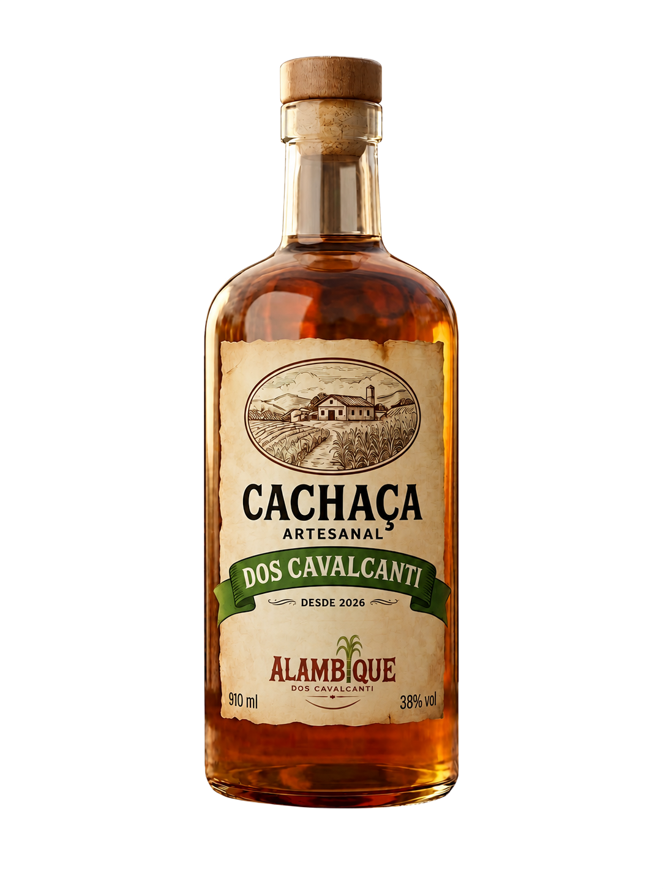
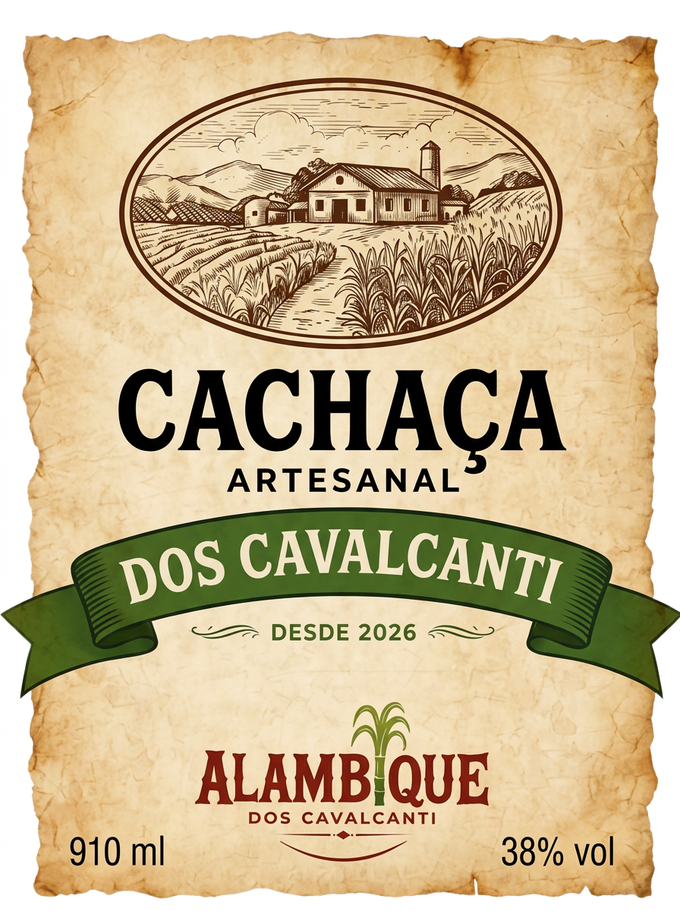

Cachaça artesanal,
feita como antigamente.
Nascida no coração da tradição canavieira de Pernambuco, a Cachaça dos Cavalcanti resgata a paciência da destilação fracionada em alambique de cobre descontinuo. Cada gota repousa em tempo nobre para revelar a essência doce, aveludada e viva do caldo de cana recém-colhido.
Uma tiragem estritamente limitada, numerada garrafa a garrafa, desenvolvida para colecionadores e apreciadores de destilados finos brasileiros.
A Experiência Sensorial
A harmonia perfeita entre o calor do cobre e a doçura campestre da cana madura em equilíbrio de mestre alambiqueiro.
Cor & Brilho
Dourado âmbar translúcido com reflexos dourados vivos. Ao girar a taça, revela lágrimas densas, límpidas e persistentes que comprovam a nobreza e pureza do corte de coração.
Bouquet Aromático
Notas vivas de cana-de-açúcar fresca e madura, entrelaçadas com toques florais silvestres, especiarias doces, baunilha delicada e o calor reconfortante do descanso amadeirado.
Textura & Sabor
Maciez e aveludamento surpreendentes na ponta da língua. Acidez redonda e equilibrada, sem ardência agressiva, culminando em um retrogoosto longo, límpido, frutado e persistente.
Harmonização
Excelente companhia para queijos curados artesanais da serra, charcutaria fina, carnes de caça com molho agridoce e sobremesas tradicionais à base de rapadura e coco fresco.

A Arte do Rótulo:
Um manifesto de identidade.
Inspirado nos títulos de propriedade e selos fiscais do século XIX, cada elemento do rótulo foi concebido para homenagear a história da família e a paisagem rural canavieira.
Gravura Tradicional do Engenho
Ilustração em técnica de bico de pena que retrata a sede colonial e o alambique original, envoltos pela vegetação tropical e os canaviais de várzea.
Fita Verde Heráldica
A faixa em verde cana com a assinatura “Dos Cavalcanti” resgata a linhagem familiar e a ligação indelével com a terra fértil da Zona da Mata.
Emblema dos Feixes de Cana
Símbolo botânico que coroa a marca Alambique, representando a colheita manual no ponto ótimo de maturação sacarina antes do orvalho matinal secar.
Ficha Técnica & Padrões de Produção
Cada detalhe métrico comprova a autenticidade e o compromisso inegociável com a destilação de alta pureza.
Potência equilibrada que favorece a suavidade gustativa sem adstringência alcoólica excessiva.
Volume histórico clássico dos alambiques coloniais brasileiros em garrafa de vidro pesado.
Zona da Mata Pernambucana, berço do cultivo secular de cana-de-açúcar de alta graduação Brix.
Destilação descontínua por bateladas com separação rigorosa de cabeça, coração e cauda.
Moagem imediata após colheita manual, sem queima de palha e com fermentação natural selecionada.
Cortiça natural de estanqueidade premium com topo amadeirado e gravação do brasão.
Garanta sua Garrafa Numerada
As unidades do Lote Nº 01 (Desde 2026) serão distribuídas por ordem de inscrição prioritária. Preencha seus dados para receber o convite de reserva oficial antes da abertura geral.
Obrigado! Sua solicitação de reserva foi registrada com sucesso.
Nossa curadoria entrará em contato assim que o lote for envasado e rotulado.